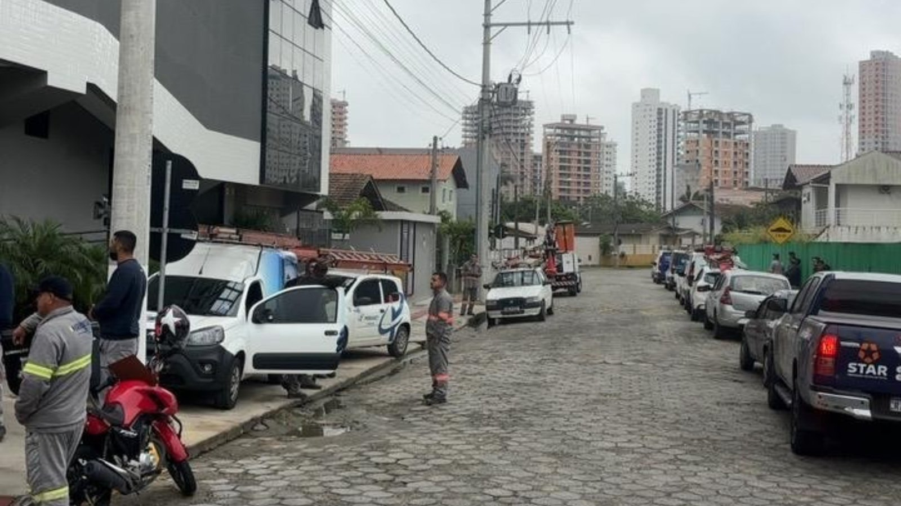

Porto Belo · Segurança
Porto Belo · SegurançaGuarda Municipal de Porto Belo fecha o primeiro semestre com mais de 3,2 mil ocorrências
O que mais aparece na rua da mesma cidade.
O programa Limpa Fios começou na quinta-feira, 27, pela Rua Senador Atílio Fontana, esquina com a Avenida Governador Celso Ramos. Quem toca é o PROCON Municipal, junto com a Celesc, o Procon de Santa Catarina e os provedores de internet.
Em 30 segundos · Modo de Leitura, formato original Santa Informa
Porto Belo começou o programa Limpa Fios.
A largada foi na quinta-feira, 27 de agosto.
Quem toca é o PROCON Municipal.
A ação junta Celesc, Procon de Santa Catarina e os provedores de internet.
A primeira frente é a Rua Senador Atílio Fontana, esquina com a Avenida Governador Celso Ramos.
O trabalho vai das 8h30 às 16h30, com parada ao meio-dia.
Depois vem a Avenida Hironildo Conceição dos Santos, do limite do município até a Rótula do Koch.
Cabo sem permissão de uso da estrutura da Celesc pode ser retirado.
Empresa licenciada tem procedimento próprio antes de qualquer supressão.
A Celesc manda a lista das credenciadas para a Fazenda conferir o cadastro.
InfraestruturaPublicada em Redação Santa Informa

Quem anda pelas ruas do litoral conhece a cena: poste com um novelo de cabos, alguns pendurados na altura da cabeça, e ninguém sabe de quem é qual. O Governo de Porto Belo, pelo PROCON Municipal, começou na quinta-feira, 27, o programa Limpa Fios, criado para organizar o cabeamento de telecomunicações instalado nas vias do município.
A primeira frente é a Rua Senador Atílio Fontana, na esquina com a Avenida Governador Celso Ramos. O trabalho vai das 8h30 às 16h30, com parada entre meio-dia e uma da tarde. Depois a operação segue para a Avenida Hironildo Conceição dos Santos, do limite do município até a Rótula do Koch.
A ação reúne a administração municipal, o Procon de Santa Catarina, a Celesc e os provedores de internet, que se sentaram na mesma mesa na terça-feira, 25, na sede da Prefeitura, para acertar como a coisa ia funcionar.
Cabo instalado de forma clandestina, sem permissão de uso da estrutura da Celesc, pode ser retirado. Empresa licenciada que estiver fora da área autorizada segue um procedimento próprio antes de qualquer supressão, ou seja, não sai cortando. A Prefeitura vai manter um canal aberto com as empresas para notificação e acompanhamento de pedido, e a Celesc encaminha a lista das companhias credenciadas para a Secretaria da Fazenda conferir quem tem cadastro no município.
Fio solto no poste não é só feiura. É risco de choque em dia de chuva, é risco de fogo no ponto onde o cabo esquenta e é o caminhão de mudança arrancando meio quarteirão de internet numa curva mal feita. Também é o que aparece em toda foto da rua, e cidade que vive de turista sabe quanto isso custa.
Itapema, Bombinhas e Balneário Camboriú têm o mesmo poste cheio e a mesma dificuldade de saber de quem é cada cabo. Por isso vale ficar de olho no que Porto Belo consegue fazer daqui até o começo da temporada. No litoral, o vizinho costuma copiar rápido o que dá resultado, e organizar cabeamento é um daqueles serviços que ninguém elogia enquanto está sendo feito e todo mundo nota depois de pronto.
O resumo de 30 segundos está no topo e a versão completa é o texto acima. Aqui ficam as três leituras da casa sobre o mesmo assunto.
Clara, a otimista
Rua com poste organizado é rua mais segura e mais bonita, e as duas coisas contam para uma cidade que vive de quem chega de fora. Poucas prefeituras encaram esse abacaxi, porque dá trabalho e não rende foto bonita de inauguração.
E o começo foi pelo jeito certo: sentar com a Celesc, com o Procon estadual e com os provedores antes de subir na escada. Quando todo mundo sabe a regra, sobra menos cliente na mão.
Seu Prudêncio, o criterioso
Merece atenção a parte do corte. Cabo clandestino é cabo clandestino, mas nem sempre é fácil dizer, do chão, qual é o clandestino e qual é o da empresa credenciada. Errar aí significa deixar casa e comércio sem serviço, e a conta desse erro chega rápido.
Vale acompanhar dois pontos. O primeiro é o prazo que a empresa licenciada tem entre a notificação e a supressão, porque prazo curto virá acompanhado de reclamação. O segundo é o canal do consumidor: quem ficou sem internet precisa saber a quem recorrer no mesmo dia, não na semana seguinte. Uma sugestão útil: divulgar as ruas da semana com antecedência, para o provedor ir na frente e o morador não ser pego de surpresa.
Dito isso, colocar Celesc, Procon de Santa Catarina e provedores na mesma mesa antes de começar é o jeito certo de fazer, e a escolha de começar por uma esquina movimentada mostra que a ideia não é só posar para foto.
Caco, o sarcástico
Vão tirar os fios do poste. Só peço que não levem o meu, que ele é feio, é solto e é o único que funciona.
O poste da esquina tinha mais fio do que a novela das nove tem personagem. Uns nem sabiam mais para onde iam.
E olha o detalhe bonito: cabo sem permissão pode ser retirado. Ou seja, o poste também tem lista de convidados. Só faltava isso.
Fontes: Prefeitura de Porto Belo, publicação de 27 de agosto de 2026 com o início do programa Limpa Fios, tocado pelo PROCON Municipal para organizar o cabeamento de telecomunicações das vias, trazendo a data de largada na quinta-feira 27, a reunião preparatória de terça-feira 25 na sede da Prefeitura com a administração municipal, o Procon de Santa Catarina, a Celesc e os provedores de internet, a primeira frente na Rua Senador Atílio Fontana esquina com a Avenida Governador Celso Ramos, o horário de 8h30 às 16h30 com intervalo de meio-dia à uma, a segunda frente na Avenida Hironildo Conceição dos Santos do limite do município até a Rótula do Koch, a regra de que cabo instalado sem permissão de uso da estrutura da Celesc pode ser retirado, o procedimento próprio para empresa licenciada fora da área autorizada antes de qualquer supressão, o canal de notificação e acompanhamento mantido pela Prefeitura junto às empresas e o envio, pela Celesc, da lista de companhias credenciadas à Secretaria da Fazenda para conferência de cadastro no município. A foto de topo é a divulgação oficial da própria publicação, creditada à Prefeitura de Porto Belo.
Porto Belo · SegurançaO que mais aparece na rua da mesma cidade.
 Tijucas · Mobilidade
Tijucas · MobilidadeOutra obra de vizinho que muda a rotina.
Quando a intervenção na via mexe com o trânsito.